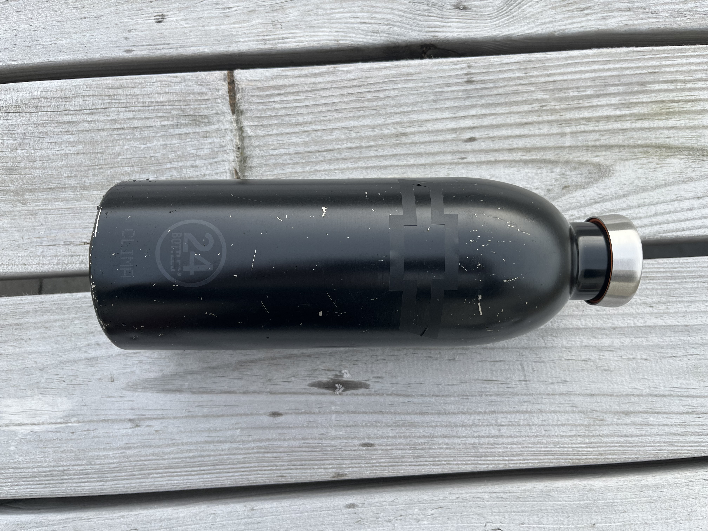
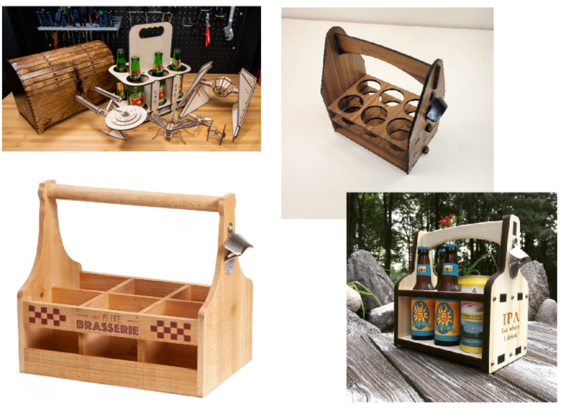
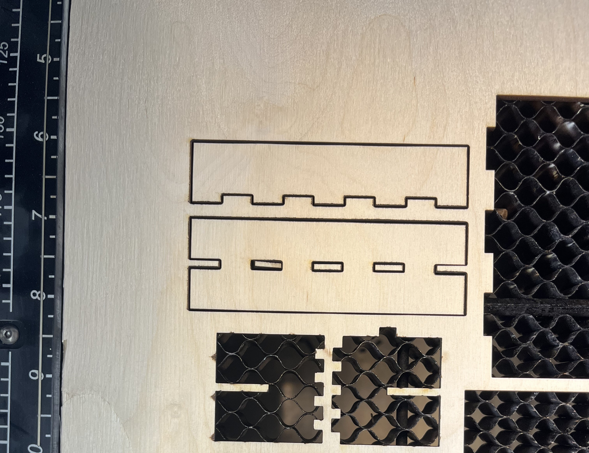
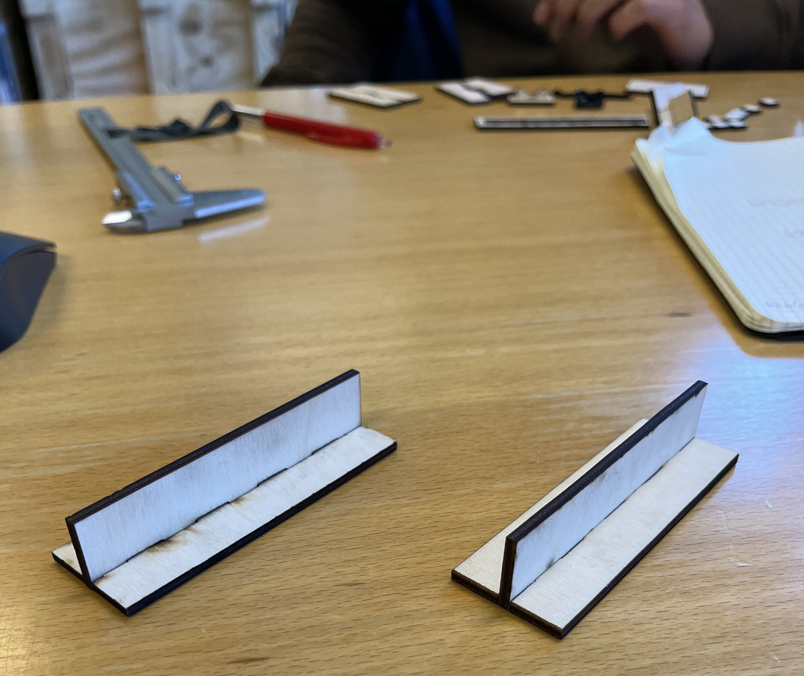
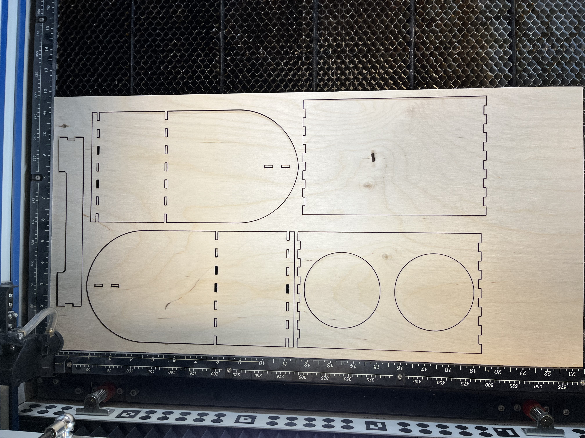

Verkefni 2
Parametrísk hönnun og Tölvustuddur skurður

Fyrsti hluti verkefnisisn var að útbúa límmiða. Fyrsta hugmyndin var að ger límmiða úr gamalli chevrolet auglýsingu. Eftir smá leit fann ég þó enga sem mig þótti góð. Því var merkið tekið, einfalt og gott.
Þar sem að alskonar smáatriði fylgja myndinni var erfit að fá inkscape til að "trace-a" myndina. Vel getur verið að til séu leiðir til þess að fá þetta til að virka og einhverjar aðferðir eru í myndbandi frá kennara. Myndbandið var hinsvegar ekki komið þegar ég gerði þetta og fan ég því einfaldari mynd.

Vel gekk að trace-a þessa mynd. Henni var svo exportað sem svg í tölvu výnilskerans og varð útkaman þessi.
Seinni hluti verkefnisisns var að útbúa parametrískt, geirnelgt módel. Skilyrðin voru eftirfarandi, módelið þurfti að hafa amk þrjá geirnelgda festipunkta, hægt þurfti að vera að skala það með parametrunum, breyta hæð, lengd, efnisþykt o.s.fv. og svo mátti einingus nota ákveðið mikið efni.
Næsta skref var því að láta hugan flakka. Sú hugmynd um að gera lítið náttborð eða einhversunar lítið borð var fyrsta hugmyndin. Hún var þó ekki langlíf eftir að ég áttaði mig á þykkt, breydd og lengd plötunar sem stóð til boða. Markmiðið var að gera eitthvað sem ég gæti raunverulega notað en eftir að borðið fauk út var lítið um aðrar hugmyndir. Því snéri ég mér að veraldarvefnum. Eftir nokkrar uppfletingar inn á leitarvél Google var það leitarorðið "laser cut projects" sem uppskar næstu hugmynd. Þar var mynd með tillögum að göfum sem hægt væri að geislaskera. Inn í miðri mynd leyndst bjórkippa, þetta þótti mér ægilega sniðug enda upprenandi stemningsmaður. Útfærslan á myndinni var þó ekki alveg eins og ég vildi hafa hana og hélt leitin að innblæstri því áfram.
Hugmyndaleitin uppskar þessar myndir en þær lögðu allar einhvers til lokaútgáfunar. Næsta skref var að rissa upp á blað hvernig ég ættlaði að útfæra þetta.
Eftir að hafa krassað grófa hugmynd á blað var næsta skref að koma þessu yfir í fusion. Til þess að koma mér af stað ákvað ég gera grófa frumgerð í fusion bara til þess að fá tilfiningu fyrir parametrískri hönnun og einnig áttaði ég mig ekki hvaða máli þetta mikið umtalaða kerf væri. Því slepti ég geirneglingunni og kerf "offseti" i bili.

Þetta var útkoman og fannst mér hún eiginlega koma best út. Aftur á móti var hún ekki fullkomlega parametrísk.
Parametrísk hönnun og geirnegling var þó skilyrði verkefnisins og var því hafist handa við næstu útgáfu en hún reyndist margfalt tímafrekari en sú fyrsta. Nú var kominn tími á parametríska fingur og reyndist eftirfarandi myndband mér mjög vel
Hobbyist Maker
. Aðferðirnar sem sýndar eru í þessu myndbandi duguðu mér fyrir allan teikningarhluta verkefnisins. Til að byrja með sýnir hann parametríska hönnun á fingurnum, ég fylgdi þeim leiðbeiningum og kom það vel út. Svo sýnir hann einnig mjög sniðugt verkfæri sem er combine. Það hentar vel þegar tvær hliðar eiga að fara saman. En þá býr maður til aðra hliðina með þeim fingrum sem maður vill, gerir svo næstu ofan í fyrstu hliðina og með combine er efnið tekið sem skarast. Hlutirnir passa þá fullkomlega saman og ekki þarf að fikta með einhverjar málsetningar sem þurfa að stemma. Önnur skipun sem kemur einnig að góðum notum er Extrude from object, t.d. þegar gera á öfuga hlið. Hér var mesta vesenið að fá allt til þess að tolla saman þegar parametrunum er breytt.
Þetta tilfelli er dæmi um það. Aftur á móti var oft frekar auðvelt að finna út úr því hvernig stæði á þessu með því að vinna sig aðeins til baka út frá villumeldingunni. Hvort sem það var málsetning sem var ekki rétt, plan sem var fast eða eitthvað allt annað.
Nú var kippan byrjuð að taka á sig loka mynd og þurfti að fara huga að skurði. Kom þá í ljós að ég hafði gleymt að gera hver part fyrir sig sem component eins og í fyrri útgáfu heldur hafði ég í hita leiksins gert allt sem mismunandi body. Þetta uppgvötvaði ég fyrst þegar átti að gera copy af öllu til þess að legja það niður í skurðarstöðu. Við undirbúninginn undir skurð studdist ég við myndbandið Fusion360 - Laying out flat sheet components to prepare for CAM
. Í stuttu máli þarf að setja alla íhluti í einn component, afrita hann svo og leggja afritið svo niður í skurðarstöðu. Mér til mikilar lukku var hægt að gera body að component með einum smelli. Ekki reyndist það þó vera lausn því þegar ég reyndi að færa þá í einn stakan component færðu þeir sig ekki fet. Eftir talsvert bras reyndist lausninn vera sú að setja þá inn í þennan eina component sem body og breyta þeim svo þar inni. Þá fyrst var hægt að gera afrit og leggja íhlutina niður. Til þess að leggja íhlutina niður notaði ég align og passaði að velja réttu hliðar og brúnir. Til þess að fá hugmynd um það hvernig hlutarnir passa á plötuna sem skera á þá úr gerði ég einfalt sketch og lagði íhlutina ofan á það. Þegar íhlutirnir eru færðir til með move þarf að passa að haka við component en ekki body en annars hreyfist upphaflega módelið líka.
Við geislaskurð brennur geislinn smá af efninu sem gerir það að verkum að t.d. geirneglingin gangi ekki. Til þess að koma í veg fyrir það þarf að mæla breydd geislans. Þetta er gert með því að gera kassa og inn í honum gerði ég aðra 13 litla kassa, sem endar í 14 skurðum. Fyrst var þetta teiknað í fusion, færst svo yfir í inkscape og exportað sem svg skrá. Henni er svo komið yfir á usb lykil, hann setur í tölvu eislaskerans og skorið út.

Niðurstaðan var sú að kerfið væri um 0.16 mm. Kerf prófunin var frammkvæmd í samstarfi við gæðinginn, Ólaf Inga Finsen og þakka ég honum gott og farsælt samstarf. Síðu hans má finna Hér
Síðast skref fyrir útskurð var að athuga hvort fingurnir pössuðu saman. Til þess að prófa það teiknaði ég þá upp í fusion með þeim málum sem stóð til að nota í loka útgáfunni.
Nú þurfti að nota kerf mælingarnar. Til eru ýmsar aðferðir til þess að gera ráð fyrir breydd geislans. Ég fann þetta fína myndband þar sem þetta er útskýrt vel, DXF Laser Cut Export with Automatic Kerf Compensation in Fusion 360
. Í grófum dráttum þarf að fara inn í Manufacture, búa til setup og svo 2d profile. Eina sem vantar í myndbandið er það hvernig gera á nýtt "Tool", en til þess að búa til nýtt tool þarf að fara inn í tool library, ýta þar á plúsinn og ger nýtt verkfæri. Það eina sem ég breytti var kerfið, annað lét ég alveg vera. Ef breyta þarf kerfinu eftir á breytir maður því á sama stað.
Fingurnir voru svo skornir út úr afgangi úr plötu og mátaðir.
Einhverja hluta vegna var geirneglingin allt of laus, því þurfti að prófa þetta aftur með öðru kerfi. Þar sem þetta var mjög laust ákvað ég að fara upp í 0.30 mm, kerfinu var breytt í fusion og ferlið endurtekið.
Seinni prufan passaði aftur á móti fullkomlega og var næst skref því einfaldlega að skera út bjórkippuna.
Henni var svo púslað saman. Það gekki örlítið brösulega en þrátt fyrir að prufan hafi passað val vandaðist aðeins málið þegar fingurnir urðu fleiri og þegar það þurfti að láta nokkra íhluti passa saman á sama tíma. Einnig þarf að passa það að prófa mismunandi hliðar þar sem oft er ein hlið sem passar betri en hin.
Útkoman er nokkuð góð og hóf kippan störf um leið og siðasta hliðin small á. Skrána af módelinu má nálgast hér Thingiverse.
.